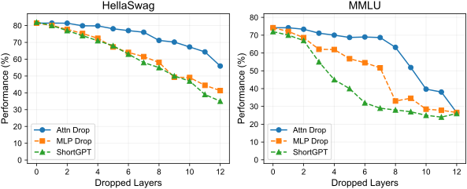
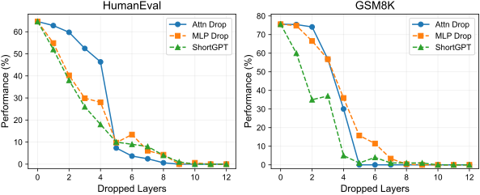
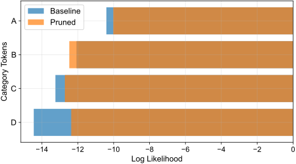

Deep Dive into Empirical Phenomena
Key figures illustrating why representation hierarchies solve the pruning paradox.

Non-Generative Benchmark Stability
In single-step evaluations (MMLU, ARC, fixed GSM8K), models evaluate relative score differences over fixed context. Because the answer-option subspace preserves relative ranking, accuracy remains high even when large portions of weights or layers are removed.

Generative Quality Breakdown
In multi-step autoregressive generation (MT-Bench, AlpacaEval, HumanEval), every token chosen feeds back into the prompt for the next step. Minor probability shifts cause token substitutions that rapidly steer the generation into catastrophic drift or collapse.

Attention Sublayer Sensitivity
Attention sublayers exhibit sharp, localized sensitivity to pruning in early-to-middle layers. Perturbations in query-key routing propagate dramatically into downstream probability entropy.

Option Subspace vs Global Vocabulary
Restricting logits to the multiple-choice option subspace {A, B, C, D} shields predictions from global vocabulary-level noise, directly explaining the survival of non-generative benchmark scores.

Autoregressive Generation Collapse
Under layer dropping or high-sparsity pruning, the model can enter repetitive attractor loops or produce degenerate sequences during open-ended generation, even when its MMLU score remains above 70%.
Pruned Generation: "Quantum computing is a computing of computing quantum... [repetition loop]"